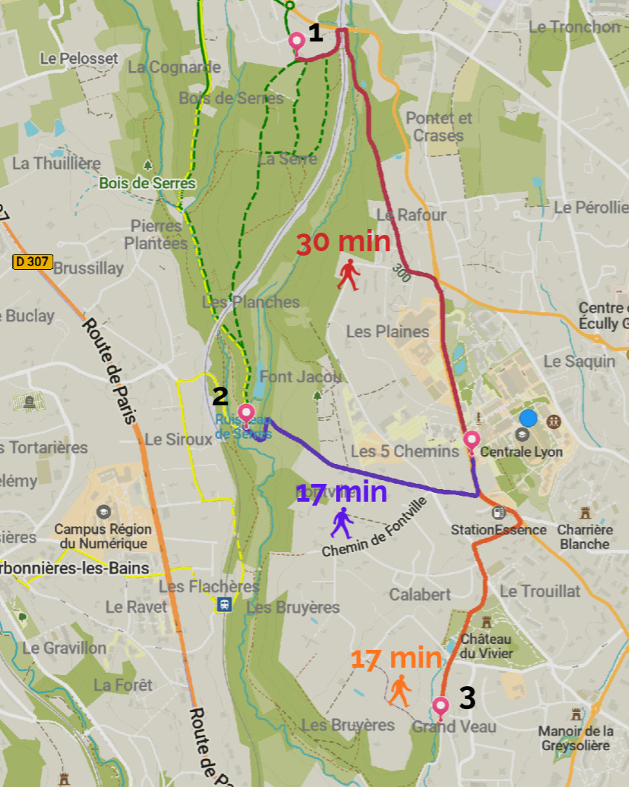

Qu'est-ce qu'un ENS ?
ENS est l'acronyme de Espace Naturel Sensible. C'est un territoire protégé par les collectivités locales (départements ou métropoles) dans le but de sauvegarder des milieux naturels fragiles (zones humides, les forêts, prairies).
Plan du bois

Liste des accès au bois :
1. Entrée Nord - Sentier du Bois de Serres
2. Entrée Est - Chemin de Charbonnières
3. Entrée Sud - Chemin des rivières